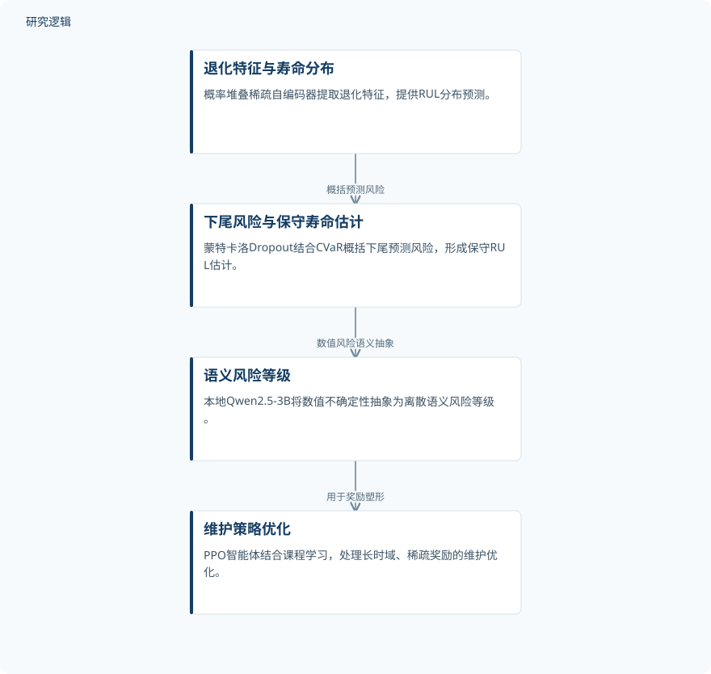

摘要解读
融合条件风险价值强化学习与大语言模型风险抽象的航空发动机预测性维护
Risk-Aware Predictive Maintenance for Aero-Engines via CVaR-Guided Reinforcement Learning and LLM-Based Risk Abstraction
解读更新 2026-10-21 22:28 · 依据公开摘要整理，未核验全文细节
航空发动机预测维护的难点，不只是预测还能运行多久，更在于如何把预测的不确定性转化为维护时机。本文提出风险感知预测维护框架，将寿命分布、尾部风险、大模型语义抽象与强化学习连接起来，值得关注的是这条从预测到决策的转换链。
文章目录
预测寿命之后，何时维护仍是难题
摘要指出，当前预测维护的一项根本局限，是难以把预后不确定性转化为可执行决策。对航空发动机而言，过早干预可能浪费资源，过晚干预则可能造成灾难性失效。风险感知预测维护（RAPM）因此把重点放在不确定性如何进入维护决策，而不只是给出剩余使用寿命（RUL）的预测值。
用尾部风险和语义等级连接维护策略
框架首先以概率堆叠稀疏自编码器提取退化特征，并输出RUL分布预测；随后结合蒙特卡洛Dropout与条件风险价值（CVaR），概括预测分布下尾部的风险，形成用于决策的保守RUL估计。
本地部署的Qwen2.5-3B将数值不确定性抽象为离散的语义风险等级，用于可解释的奖励塑形。近端策略优化（PPO）智能体则结合课程学习，处理长时域、稀疏奖励条件下的维护优化。摘要赋予大模型的角色是风险抽象，而不是直接替代寿命预测模型或维护策略。
依据摘要整理的风险感知维护流程


仅概括摘要明确陈述的预测、风险概括、语义抽象与策略优化关系，不代表论文原图或完整实现配置。
下载 SVG图示关系说明
实线表示相邻阶段的信息流，虚线表示跨阶段联系或反馈。
退化特征与寿命分布 → 下尾风险与保守寿命估计：概括预测风险；下尾风险与保守寿命估计 → 语义风险等级：数值风险语义抽象；语义风险等级 → 维护策略优化：用于奖励塑形
停止时机表现与噪声下的CVaR收益
在NASA C-MAPSS FD001基准上，RAPM的最优停止率为96.0%，最强独立维护基线为90.2%；RAPM未出现延迟干预或失效事件。这些是摘要报告的基准结果，不能直接等同于实际机队运行中的安全保证。
受控替换为LSTM-MCD、Transformer-MCD、CNN-MCD和Deep Ensemble预测骨干后，同一CVaR-LLM-PPO决策架构的最优停止率保持在92.4–95.2%，且未出现延迟干预或失效事件。摘要据此认为，决策收益可延伸至独立训练的不同预测模型。
在匹配的Rule-PPO消融比较中，无扰动条件下，CVaR将平均最优停止率从92.0%提高至95.0%，增加3.0个百分点；高斯传感器噪声为σ=0.05时，该指标从73.0%提高至82.0%，增加9.0个百分点。这项比较针对CVaR的作用，不宜用来单独证明大模型模块的贡献。
摘要尚不能回答统计可靠性与应用边界
仅凭摘要，无法判断测试样本规模、重复运行次数、结果波动，以及最优停止率的具体判定规则；最强独立维护基线的配置和比较公平性也需进一步核对。摘要未交代大模型模块的独立消融或真实发动机部署验证，因此不能据此判断这些验证是否已在论文中完成，也不能把基准内未发生失效外推为普遍安全性。
阅读启发：追问风险信息如何改变行动
阅读启发：这项工作的关注点，是让预测不确定性真正参与维护行动选择。进一步阅读时，可重点核对CVaR如何设定、语义风险等级如何映射到奖励，以及不同预测骨干替换时哪些决策条件保持一致。这些问题有助于理解收益来源，而不是仅凭最终停止率判断各模块的必要性。
以上为本站阅读启发与建议，不是论文已验证的结论。